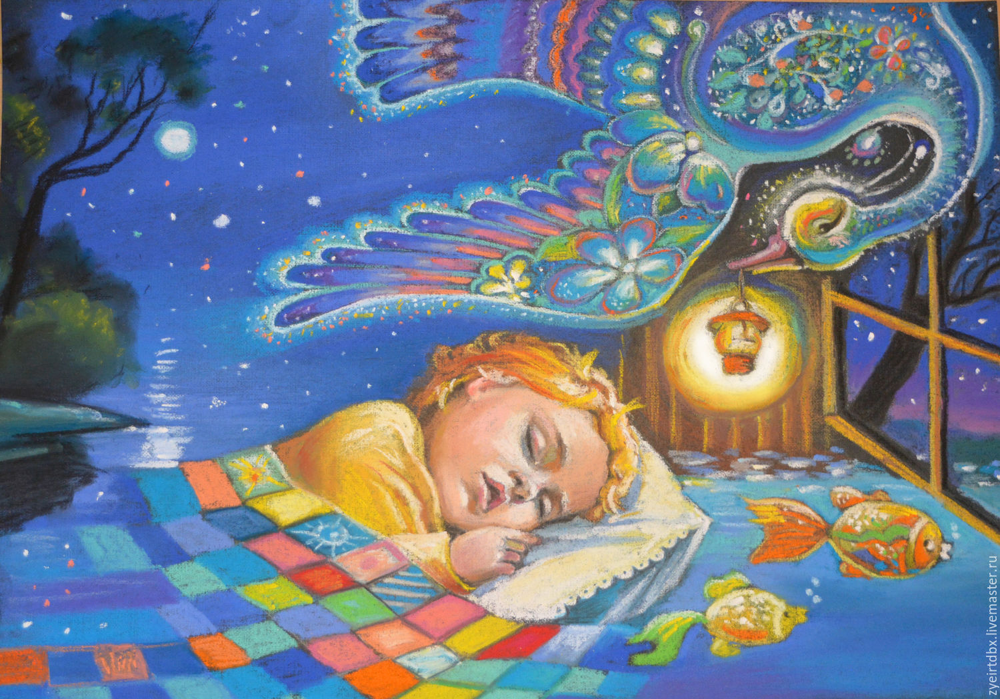

Самоконтроль при занятиях физическими упражнениями
Выберите класс:
1. Самоконтроль - это…
2. Какого метода самоконтроля не существует?
3. За чем необходимо следить во время выполнения физических упражнений?
4. Что из перечисленного является одним из признаков правильно подобранного уровня нагрузки?
5. Что из перечисленного, наоборот, является одним из признаков неправильно подобранного уровня нагрузки?
6. Какого внешнего признака переутомления не существует?

7. Если при регулярных занятиях физкультурой у вас: после сна через 0,5 - 1 час нет желания есть, а после тренировки - через 3-4 часа, то это говорит о...
8. Какой прибор необходимо иметь, чтобы измерять уровень ЖЕЛ?
9. Если при физической нагрузки ЖЕЛ увеличится на 100 - 250 см3, то это нормально?
10. Показатель ЧСС лучше всего показывает, как человек переносит нагрузку. Так ли это?
11. Какого способа измерения пульса не существует?
12. Разница ЧСС стоя и лежа в 1-12 ударов говорит о...
13. Вы замерили пульс. За 10 секунд вы насчитали 28 ударов. Ваш пульс в минуту…
14. Если пульс вернулся в привычный ритм через 7 минут после физ. нагрузки